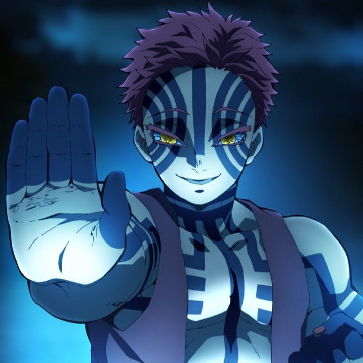

Los Demonios
En el mundo de Kimetsu no Yaiba, los demonios son seres sobrenaturales creados por Muzan Kibutsuji. Estos seres poseen una fuerza sobrehumana, regeneración rápida y habilidades únicas conocidas como "Artes de Sangre". Sin embargo, están condenados a vivir en la oscuridad, ya que la luz del sol puede destruirlos.
Demonios Destacados

Muzan Kibutsuji
El primer demonio y el antagonista principal de la serie. Su ambición es encontrar la manera de volverse inmune a la luz solar y crear una raza perfecta de demonios.

Akaza
El demonio de rango superior tres. Es conocido por su destreza en combate cuerpo a cuerpo y su obsesión por enfrentarse a los más fuertes.

Daki y Gyutaro
Hermanos que ocupan el rango superior seis. Sus habilidades combinadas los convierten en enemigos formidables.